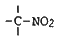
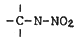
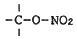
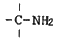
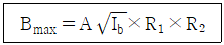
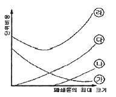
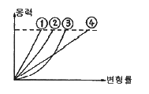
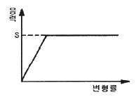

화약류관리산업기사 (2007-09-02 기출문제)
1과목: 일반화약학
1. 다음 화약의 용도에 의한 분류 중 파괴약에 속하지 않는 것은?
- 발파약
- 작약
- 전폭약
- 점화약
(정답률: 알수없음)

2. 다음 중 혼합 화약류에 속하지 않는 것은?
- 흑색화약
- 질산암모늄폭약
- 카알리트(carlit)
- 면약(綿藥)
(정답률: 알수없음)
3. 다음 중 맹성화약류에 해당하지 않는 것은?
- dynamite
- 카알리트
- 무연화약
- T.N.T
(정답률: 알수없음)
4. 다음 중 뇌홍의 분자식에 해당하는 것은?
- Ag(ONC)2
- Hg(ONC)2
- HgNO3
- Cu(ONC)2
(정답률: 알수없음)
5. 다음 흑색화약에 대한 설명으로 옳은 것은?
- 질산암모늄을 주제로 한 화약이다.
- 보통 무연화약으로 발화시 거의 연기를 내지 않는다.
- 화염, 마찰, 충격에 예민하다.
- 자연분해 하기 쉽고 오래 저장할 수 없다.
(정답률: 알수없음)
6. 다음 화약류 중에서 자연발화 또는 자연폭발을 일으키는 경향이 있는 것으로만 이루어진 것은?
- 공업뇌관, ANFO
- 흑색화약, 공업뇌관
- 초안폭약, ANFO
- 무연화약, 면약
(정답률: 알수없음)
7. 다음 중 화약류와 관련한 화학결합 물질이 아닌 것은?




(정답률: 알수없음)
8. ANFO 폭약의 원료로서 가장 적합한 질산암모늄의 형태는?
- 저비중 덩어리
- 저비중 다공질 알갱이 모양
- 고밀도 덩어리
- 고밀도 다공질 알갱이 모양
(정답률: 알수없음)
9. 다음 중 폭약의 예감제로 사용되는 것은?
- 붕사
- 목분
- 디니트로나프탈렌
- 전분
(정답률: 알수없음)
10. 뇌관의 청장약으로 쓰이지 않는 것은?
- Tetryl
- RDX
- Powery dynamite
- Pentrite
(정답률: 알수없음)
11. 다음 화약류에 관한 설명 중 틀린 것은?
- 피크르산, T.N.T 또는 흑색화약을 주로 하는 화약류는 장기 보존에 유리하다.
- 탄광용 폭약은 폭발온도가 매우 높은 질산암모늄을 주 원료로 한다.
- 교질 다이너마이트는 니트로글리세린이 여름에는 침출하고 겨울에는 동결하는 것을 조심하여야 한다.
- 공업뇌관의 관체의 재질은 기폭약으로 아지드화납을 주로 쓸 때는 알루미늄을 쓴다.
(정답률: 알수없음)
12. 다음 가스 중 발파의 후가스로서 가장 유독한 것은?
- 탄산가스
- 수소가스
- 일산화탄소
- 질소가스
(정답률: 알수없음)
13. 무연 화약의 폭속에 가장 가까운 것은?
- 0.1 ~ 0.3m/s
- 1 ~ 30m/s
- 10 ~ 300m/s
- 1000 ~ 3000m/s
(정답률: 알수없음)
14. 갱내에서 다이너마이트 또는 Carlit를 폭발시킬 때 생성되는 다음 가스 중 가장 유독성이 없는 것은?
- 염화수소가스
- 일산화탄소
- 과산화질소
- 탄산가스
(정답률: 알수없음)
15. 다음 중 질산염 혼합 화약류가 아닌 것은?
- ANFO 폭약
- 암모날(Ammonal) 폭약
- 흑색 화약
- 카알리트(Carlit) 화약
(정답률: 알수없음)
16. 니트로셀룰로오스를 안전하게 보관 및 운반하려면 보유 수분은 통상 몇 % 정도가 되어야 하는가?
- 2
- 6
- 12
- 23
(정답률: 알수없음)
17. 군용 화약으로 실탄 등에 주로 사용되는 것은?
- ANFO
- T.N.T
- 무연 화약
- 흑색 화약
(정답률: 알수없음)
18. 배합 성분에 대한 설명으로 옳은 것은?
- 질산나트룸은 예감제로 배합되어 있다.
- 전분은 산소공급제로 배합되어 있다.
- 질산암모늄은 산소공급제로 배합되어 있다.
- 식염은 가연제로 배합되어 있다.
(정답률: 알수없음)
19. 화약류의 안정도 시험방법이 아닌 것은?
- 내열시험
- 순폭시험
- 가열시험
- 유리산시험
(정답률: 알수없음)
20. 어떤 화약의 순폭거리가 200mm 이었고, 약포의 지름은 40mm 이었다면, 화약의 순폭도는 얼마인가?
- 5
- 10
- 25
- 30
(정답률: 알수없음)
2과목: 발파공학
21. 길이 8m, 폭 3m인 5자유면 암체의 최적 발파공수는? (단, 1 발파공당 절단면적 6.19m2, 구멍지름 32mm)
- 4공
- 6공
- 8공
- 10공
(정답률: 알수없음)
22. 인장강도가 80kgf/cm2인 암반을 선균열(pre-splitting) 발파하려고 한다. 직경 75mm의 장약공내 작용압력이 720kgf/cm2 이라면 장약공 간의 최대간격은?
- 75cm
- 35cm
- 57.5cm
- 37.5cm
(정답률: 알수없음)
23. NG 60%의 스트렝스 다이너마이트를 기준으로 할 때 암석계수(kg/m3)의 평균 값이 제일 작은 것은?
- 편마암
- 안산암
- 화강암
- 응회암
(정답률: 알수없음)
24. 초안유제폭약(ANFO)의 장전에 대한 설명 중 잘못된 것은?
- 장전작업 중에는 화기사용을 하지 말아야 한다.
- 장전기는 접지시킨 후 사용해야 한다.
- ANFO의 전폭약은 장전기로 장전하면 효과적이다.
- 장전 후는 가능한 한 신속하게 점화하야여 한다.
(정답률: 알수없음)
25. 폭약이 폭발하여 공기중에서 850m/sec의 충격파가 발생할 때 피크압(peak압)은? (단, 공기의 비열비는 1.4이다.)
- 2.5atm
- 3.75atm
- 4.68atm
- 6.13atm
(정답률: 알수없음)
26. 발파작업시 사용디는 안전덮개의 충족요건으로 올바르지 못한 것은?
- 충분한 강도를 갖고 상호 연결될 수 있는 것
- 유연성이 있어 굴곡면을 덮을 수 있는 것
- 비교적 빈틈이 적고, 가스 투과성이 없는 것
- 가능한 큰 면을 덮을 수 있는 것
(정답률: 알수없음)
27. 저항 1.4Ω의 전기뇌관 30개를 직렬로 결선하고, 단선 1m의 저항 0.021Ω인 모선(총연장 100m)을 사용하여 전기발파하려면 발파기의 기전력은 몇 V 이상으로 하면 좋은가? (단, 전류는 1.5A로 하고, 발파기의 내부저항은 30Ω로 한다.)
- 70.6V
- 75.6V
- 100.2V
- 111.2V
(정답률: 알수없음)
28. 발파진동과 지진동의 차이에 대한 설명으로 맞는 것은?
- 발파진동은 지진동보다 진동의 파형이 더 복잡하다.
- 발파진동이 지진동에 비해 상대적인 진동시간이 더 길다.
- 발파진동의 주진동수의 범위는 지진동보다 더 크다.
- 발파진동은 지진동에 비해 더 많은 에너지를 수반한다.
(정답률: 알수없음)
29. 전폭약포의 장전이치에 따라 정기폭, 중간기폭, 역기폭으로 나눌 수 있다. 역기폭에 대한 설명 중 잘못된 것은?
- 전폭약포를 공저에 넣는 방법이다.
- 폭발위력이 내부에 더욱 크게 작용하여 잔류공을 남기는 일이 없다.
- 장전시 전폭약포의 뇌관이 공저에 충돌할 위험이 있어 다져 넣는데 주의해야 한다.
- ANFO 폭약을 장전기로 장전하는 경우에는 안전하므로 반드시 역기폭을 실시한다.
(정답률: 알수없음)
30. 작은 파쇄입도를 얻기 위한 발파 조건으로 틀린 것은?
- 비장약량을 증가시킨다.
- 보조 천공을 실시한다.
- 한열씩 발파한다.
- 암질에 타당한 폭약을 선택한다.
(정답률: 알수없음)
31. 다음 중 계단식 발파를 위한 천공작업시 경사 천공의 장점이 아닌 것은?
- 자유면 반대 방향의 후면 파괴 감소
- 1 자유면에서 문제성 감소
- 낮은 계단 발파에서 양호한 파쇄율
- 장약 작업의 용이
(정답률: 알수없음)
32. 다음 중 비전기식 뇌관의 특징에 대한 설명으로 가장 거리가 먼 것은?
- 미주전류, 정전기 등에 안전하다.
- 결선 누락의 확인이 육안으로만 가능하다.
- 뇌관 내부에는 연시 장치가 없으며, 튜브의 길이를 변화함으로써 양호한 초시 정밀도를 지발 발파를 할 수 있다.
- 결선작업이 단순, 용이하다.
(정답률: 알수없음)
33. 성형폭약(Shaped Charge)은 폭약의 폭발력을 특정한 방향으로 전달하기 위한 원뿔 또는 반구형 구조를 가지고 있다. 이러한 구조는 어떤 효과를 이용한 것인가?
- 노이면 효과
- 홉킨스 효과
- 하우저 효과
- 디커플링 효과
(정답률: 알수없음)
34. 터널발파의 외곽공은 다른 공과는 달리 바깥 쪽으로 약간 비스듬히 천공하는데 이를 가리키는 용어는?
- decoupling
- angle out
- cementation
- look out
(정답률: 알수없음)
35. 특정방향의 음압레벨과 평균음압레벨의 차이인 지향지수(D.I)가 4dB일 때 지향계수는 얼마인가?
- 2.0
- 2.5
- 3.0
- 3.5
(정답률: 알수없음)
36. 발파효과에 영향을 미치는 발파관련 변수에는 여러 가지가 있다. 다음 중 조절이 어려운 변수는 어느 것인가?
- 불연속면
- 비장약량
- 단위 천공율
- 발파의 지연초시
(정답률: 알수없음)
37. 벤처발파 설계에서 저항선의 최대거리(m)를 계산하는 다음의 Langefors 식에서 Ib가 가리키는 항목은?

- 공저 장약밀도
- 공경사에 따른 보정치
- 암석계수에 따른 보정치
- 폭약의 종류에 따른 보정치
(정답률: 알수없음)
38. 다음 그림은 발파의 경제성을 평가하기 위한 그래프로서 파쇄물의 최대 크기(입도)에 대한 천공 및 발파, 운반, 소할 비용 등을 표시하고 있다. 이 그림에서 ㉮곡선이 가리키는 것은?

- 운반비용
- 천공 및 발파비용
- 소할비용
- 총비용
(정답률: 알수없음)
39. 발파에 의한 음압수준(dB)이 120dB인 경우는 100dB인 경우에 비해 음압의 크기는 몇 배에 해당하는가?
- 1.2배
- 10배
- 12배
- 20배
(정답률: 알수없음)
40. Daw 이론에 대해 설명한 것 중 맞는 것은?
- 약실 투사면적을 크게 하여 전압력을 증대시키기 위해서는 파괴면에 대하여 약실을 수직으로 설치하면 최대 투사면적을 갖게 할 수 있다.
- 약실의 단위면적에 작용하는 압력을 크게 하여 파괴력을 증대시키려면 폭약의 장전비중을 작게 해주어야 한다.
- 전압력을 크게 하려면 약실의 투과면적과 약실의 단위면적에 작용하는 압력을 크게 하면 된다.
- 발파효과 상승 및 불발방지를 위해 폭약을 가압하여 폭약의 비중을 최대한 증대시켜야 한다.
(정답률: 알수없음)
3과목: 암석역학
41. 다음 그림에서 취성도가 가장 큰 암석은?

- ①
- ②
- ③
- ④
(정답률: 알수없음)
42. 다음 설명 중 옳지 않은 것은?
- 일반적으로 암석은 상온상압하에서 취성파괴한다.
- 일반적으로 암석은 고온고압하에서 연성파괴한다.
- 압축강도와 인장강도의 비를 취성도라 한다.
- 취성파괴는 물체내의 균열의 전파속도가 느리기 때문에 발생한다.
(정답률: 알수없음)
43. 어떤 물체에 서서히 하중을 가하여 변형이 발생하게 한 후 다시 하중을 제거하여도 원상태로 변형이 되돌아가지 않을 때 이러한 변형을 무엇이라고 하는가?
- 연성변형
- 항복변형
- 영구변형
- 취성변형
(정답률: 알수없음)
44. 탄성계수값이 2×105 kg/cm2 인 암석시편에 일축압축하중을 가하여 변형율이 0.003 발생하였다면 이 시편의 단위체적속에 축적된 탄성변형률에너지는 얼마인가?
- 0.3 kg/cm2
- 0.5 kg/cm2
- 0.9 kg/cm2
- 1.8 kg/cm2
(정답률: 알수없음)
45. 어떤 암석의 강성률(G) 0.8×105 kg/cm2이고 포아송비(ν)가 0.25이면 이 암석의 영률(young's modulus)은 얼마인가?
- 2.0×105 kg/cm2
- 3.4×105 kg/cm2
- 4.8×105 kg/cm2
- 5.2×105 kg/cm2
(정답률: 알수없음)
46. 다음 중 암석 파괴이론의 종류가 아닌 것은?
- Bond 이론
- Mphr 이론
- Coulomb 이론
- Tresca 이론
(정답률: 알수없음)
47. 직경 3cm인 원주형 암석시편에 인장력 3000kg이 가해지고 있다. 시편 내부의 경사면에 작용하는 최대전단응력(τmax)과 법선응력(σn)은?
- τmax = 175.2kg/cm2, σn = 175.2kg/cm2
- τmax = 175.2kg/cm2, σn = 197.5kg/cm2
- τmax = 212.2kg/cm2, σn = 212.2kg/cm2
- τmax = 212.2kg/cm2, σn = 424.4kg/cm2
(정답률: 알수없음)
48. 암석의 파괴를 설명하는 Griffith 이론은 다음 중 어느 것과 가장 밀접한 관계가 있는가?
- 인장파괴
- 압축파괴
- 전단파괴
- 내부마찰에 의한 파괴
(정답률: 알수없음)
49. 압축시험기 본체의 강성도(stiffness)가 50t/mm, 지압대(stiff column)의 강성도가 150 t/mm, 수압기(load cell)의 강성도가 200 t/mm라면 하면 이 압축시험기의 전체 강성도는 얼마인가?
- 100 t/mm
- 200 t/mm
- 300 t/mm
- 400 t/mm
(정답률: 알수없음)
50. 그림과 같은 응력-변형거동을 보여주는 물체는?

- 완전소성체
- 점탄성체
- 완전항복체
- 완전탄성체
(정답률: 알수없음)
51. 암석의 삼축압축시험에 관한 설명으로 맞는 것은?
- 봉압이 증가하면 암석의 파괴강도는 증가한다.
- 세 개의 주응력 중 두 개의 주응력이 0 인 상태이다.
- 변형률속도의 증가율은 봉압이 증가할수록 작게된다.
- 봉압이 증가하면 변형률연화현상이 발생된다.
(정답률: 알수없음)
52. 암석이 일축압축시험에 있어서 시험편 단면의 모양이 다르면 같은 암석, 같은 단면적과 높이를 가진 시험펴닝라도 그 시험 결과가 다르다고 한다. 이러한 효과를 무엇이라고 하는가?
- 크기효과
- 분포효과
- 형상효과
- 시험효과
(정답률: 알수없음)
53. Z축 방향과 변형이 없는 평면변형률상태에서 X축의 응력 σx = 200 kg/cm2, Y축의 응력 σy = 100 kg/cm2 이라 할 때 X축 방향의 변형률은 얼마인가? (단, Young률 E = 2.5×105 kg/cm2, 포아송비 ν=0.3)
- 1.36 × 10-4
- 5.72 × 10-4
- 8.84 × 10-4
- 6.44 × 10-4
(정답률: 알수없음)
54. 암석의 단축압축강도가 160MPa, 압열인장시험에서 구한 인장강도가 10MPa 인 경우 전단강도는 얼마인가?
- 10.2 MPa
- 22.2 MPa
- 35.7 MPa
- 43.9 MPa
(정답률: 알수없음)
55. 다음 중 암반의 초기응력 측정법이 아닌 것은?
- Lugeon Test
- 공경변형법
- 수압파쇄법
- 응력보상법
(정답률: 알수없음)
56. Hoek-Brow의 경험적 파괴식을 암반에 적용하는데 있어서 가장 중요한 가정은?
- 암반거동의 선형성
- 암반의 등방성
- 암반의 균질성
- 암반의 점탄성 거동
(정답률: 알수없음)
57. Barton 등은 절리 시험으로부터 불연속면의 전단강도를 결정하는 식을 제안하였다. 이 식에 포함되는 요소가 아닌 것은?
- 잔류 마찰각
- 절리의 거칠기 계수
- 절리의 경사각
- 절리 압축강도
(정답률: 알수없음)
58. 최대 하중 이후에서 응력-변형률 곡선의 기울기의 절대치는 다음 중 어느 것인가?
- 크립(creep)
- 강성도(stiffness)
- 포아송비(poisson's ratio)
- 항복강도(yield strength)
(정답률: 알수없음)
59. 다음 중 지표면에서부터 굴착하여 소정의 위치에 지하구조물을 시공한 다음 그 윗부분을 되메워 지표면을 복구하는 공법은?
- NATM 공법
- TBM 공법
- 개착 공법
- 쉴드 공법
(정답률: 알수없음)
60. 다음 중 암반의 시간 의존적인 특성이 아닌 것은?
- 크립(creep) 현상
- 응력완화(stress relaxation)
- 소성(plasticity)
- 피로(fatigue)
(정답률: 알수없음)
4과목: 화약류 안전관리 관계 법규
61. 피뢰장치의 피뢰도선 및 가공지선의 전극기준으로 옳은 것은?
- 전극을 땅에 묻을 때에 그 부근에 가스관이 있을 경우에는 그로부터 2m 이상의 거리를 둘 것
- 전극은 피뢰도선 마다 2개 이상으로 할 것
- 전극은 알루미늄판 또는 그 이상의 전도성이 있는 금속으로 할 것
- 전극의 접지저항은 피뢰도선이 1줄인 때에는 10Ω 이하로 할 것(예외사항 제외)
(정답률: 알수없음)
62. 폭약 200톤을 저장하는 수중저장소가 있다. 제2종 보안물건과의 보안거리 기준으로 옳은 것은?
- 200m 이상
- 180m 이상
- 140m 이상
- 100m 이상
(정답률: 알수없음)
63. 화약류 저장소가 보안거리 미달로 보안물건을 침범했을 경우 행정처분기준으로 맞는 것은?
- 허가치소
- 6월 효력정지
- 3월 효력정지
- 감량 또는 이전명령
(정답률: 알수없음)
64. 화약류를 양도 또는 양수하고자 할 때 경찰서장의 허가를 받지 않아도 되는 경우가 아닌 것은?
- 제조업자가 제조할 목적으로 화약류를 양수하거나 제조한 화약류를 양도하는 경우
- 화약류의 수출입 허가를 받은 사람이 그 수출입과 관련하여 화약류를 양도·양수하는 경우
- 판매업자가 판매할 목적으로 화약류를 양도·양수하는 경우
- 화약류관리보안책임자가 현장 발파용으로 화약류를 양수하는 경우
(정답률: 알수없음)
65. 폭약과 비슷한 파괴적 폭발에 사용될 수 있는 것으로서 대통령령이 정하는 것에 속하는 것은?
- 과염소산염을 주로 한 폭약
- 폭발의 용도에 사용되는 질산요소 또는 이를 주성분으로 한 폭약
- 면약(질소함량이 11% 이상의 것에 한한다.)
- 크롬산납을 주로 한 폭약
(정답률: 알수없음)
66. 지하에 설치하는 2급 저장소의 위치, 구조 및 설비기준과 가장 거리가 먼 것은?
- 안쪽 벽은 철근콘크리트로 할 것
- 저장소의 바깥에는 특별하는 사정이 없는 한 야간에 전등을 끄고 도난방지를 위한 비상벨 등의 장치를 할 것
- 저장소 내부를 조명하는 설비를 하는 때에는 방폭식의 전등으로 할 것
- 언덕의 경사면 또는 터널 안쪽 벽에 홈을 파고 저장소를 설치할 때에는 그 저장소의 안쪽 벽을 콘크리트 또는 나무의 이중판자로 할 것
(정답률: 알수없음)
67. 사용허가를 받지 아니하고 영화 또는 연극의 효과를 위하여 1일 동일한 장소에서 사용할 수 있는 꽃불류의 수량으로 맞는 것은? (단, 쏘아 올리는 꽃불류는 제외)
- 원료화약 또는 폭약 15g 미만의 꽃불류 70개 이하
- 원료화약 또는 폭약 15g 이상 30g 미만의 꽃불류 30개 이하
- 원료화약 또는 폭약 30g 이상 50g 이하의 꽃불류 10개 이하
- 발연통·촬영조명통 또는 폭약(폭발음을 내는 것에 한 한다.) 0.2g 이하의 꽃불류
(정답률: 알수없음)
68. 지하 1급저장소의 지반 두께가 20m일 때 저장할 수 있는 폭약량의 기준으로 맞는 것은?
- 35톤 이하
- 25톤 이하
- 20톤 이하
- 17톤 이하
(정답률: 알수없음)
69. 운반신고를 하지 아니하고 운반할 수 있는 화약류의 종류 및 수량으로 맞는 것은?
- 실탄(1개당 장약량 0.5g 이하) : 10만개
- 꽃불류(장난감용 꽃불류 제외) : 250kg
- 미진동파쇄기 : 10000개
- 폭발천공기 : 1000개
(정답률: 알수없음)
70. 대발파의 기술상의 기준 중 발파를 하는 장소 및 그 부근의 지형·암층·암질, 사용하고자 하는 폭약의 종류 등을 검토하여 미리 정하고 실시하는 사항으로 거리가 먼 것은?
- 대피 장소
- 약실의 위치
- 폭약의 양
- 갱도의 굴진률
(정답률: 알수없음)
71. 꽃불류 사용의 기술상의 기준으로 옳지 않은 것은?
- 발사통을 2개 이상 사용하는 때에는 발사통 서로간에 상당한 거리를 두어야 한다.
- 꽃불류를 쏘아 올리거나 폭발 또는 연소시키고 있는 때에는 그 장소 부근에서는 꽃불류의 발사용 화약의 계량을 하지 아니한다.
- 꽃불류의 발사용 화약에 점화하여도 그 화약이 폭발 또는 연소되지 아니하는 때에는 그 발사통에 많은 양의 물을 넣고 5분 이상 경과한 후에 회수한다.
- 쏘아 올리는 꽃불류는 20m 이상의 높이에서 퍼지도록 하여야 한다.
(정답률: 알수없음)
72. 화약류 2급 저장소에 저장할 수 없는 화약류는?
- 실탄 및 공포탄
- 신관 및 화관
- 미진동파쇄기
- 타정총용 공포탄
(정답률: 알수없음)
73. 장난감용 꽃불류를 수출하고자 하는 사람은 누구의 허가를 받아야 하는가?
- 경찰서장
- 지방경찰청장
- 시·도지사
- 행정자치부장관
(정답률: 알수없음)
74. 화약류의 운반방법의 기술상의 기준에 관한 설명으로 틀린 것은?
- 니트로셀룰로오스는 수분 또는 알코올분이 23% 정도 머금은 상태로 운반해야 한다.
- 화약류는 특별한 사정이 없는 한 야간에 싣지 말아야 한다.
- 화약류 운반은 자동차(2륜자동차 및 택시를 제외한다.)에 의하여야 하며, 200km 이상의 거리를 운반할 때에는 화약류관리보안책임자 2명을 동승 운반하여야 한다.
- 화약류를 운반하는 자는 차량의 폭에 3.5m를 더한 너비 이하의 도로를 통행하지 말아야 한다.
(정답률: 알수없음)
75. 특별한 용기에 들어 있는 공업용 뇌관과 함께 실을 수 있는 폭약의 중량 기준으로 맞는 것은? (단, 동일 차량에 함께 실을 수 있는 화약류에 한함)
- 0.25톤 이하
- 1.25톤 이하
- 2.25톤 이하
- 4.5톤 이하
(정답률: 알수없음)
76. 화약류저장소 외의 장소에 저장할 수 있는 화약류의 수량 중 판매업자가 판매를 이ㅜ하여 저장하는 경우의 수량으로 맞는 것은?
- 화약 25kg
- 총용뇌관 5000개
- 전기뇌관 500개
- 꽃불류(장난감용 꽃불류 제외) 30kg
(정답률: 알수없음)
77. 다음 용어에 대한 정의로 틀린 것은?
- 공실이라 함은 화약류의 제조작업을 하기 위하여 제조소안에 설치된 건축물을 말한다.
- 화약류 일시저치장이라 함은 화약류의 취급과정에서 화약류를 일시적으로 저장하는 장소를 말한다.
- 정체량이라 함은 동일공실에 저장할 수 있는 화약류의 최대수량을 말한다.
- 위험공실이라 함은 발화 또는 폭발한 위험이 있는 공실을 말한다.
(정답률: 알수없음)
78. 총포·도검·화약류등단속법상 화약류의 취급방법이 적당하지 않은 것은?
- 얼어서 굳어진 다이나마이트는 섭씨 50도 이하의 온탕을 바깥통으로 사용한 용해기 또는 섭씨 30도 이하의 온도를 유지하는 실내에서 누그러뜨러야 한다.
- 굳어진 다이나마이트는 손으로 주물러서 부드럽게 한다.
- 전기뇌관은 미리 도통시험 또는 저항시험을 해야 하며, 시험전류는 0.01암페어를 초과하지 않아야 한다.
- 사용하다가 남은 화약류는 화약류취급소에 반납한다.
(정답률: 알수없음)
79. 다음 중 화약류저장송 따라 화약류의 최대저장량을 기술한 것 중 틀린 것은?
- 1급저장소 – 화약 40톤, 폭약 20톤
- 2급저장소 – 화약 20톤, 폭약 10톤
- 3급저장소 – 화약 50kg, 폭약 25kg
- 간이저장소 – 화약 30kg, 폭약 15kg
(정답률: 알수없음)
80. 다음 중 화약류 사용장소에서 화약류관리보안책임자의 안전상 지시·감독에 따르지 아니한 화약류취급자에 대한 처벌로 맞는 것은?
- 5년 이하의 징역 또는 1천만원 이하의 벌금
- 3년 이하의 징역 또는 1천만원 이하의 벌금
- 2년 이하의 징역 또는 1천만원 이하의 벌금
- 300만원 이하의 과태료
(정답률: 알수없음)